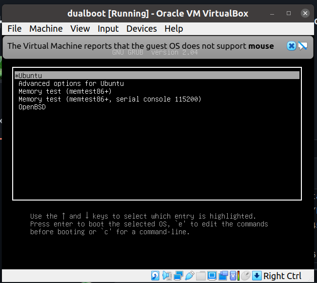
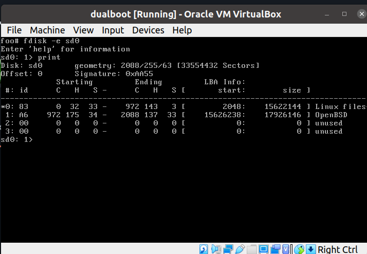

I dualboot OpenBSD with Ubuntu on both my laptop and desktop. They both work even I did two different ways to config multi-boot.

Install Ubuntu
Need to install Ubuntu first, use its disk tool to pre-create a partition for OpenBSD, just an empty partition.
As new machine nowaday using UEFI instead of BIOS, when installing Ubuntu, it is going to create a partition for EFI, mounted as /boot/efi. This mounted as type vfat on my machine.
Install Ubuntu as normal. When done, install OpenBSD.
Install OpenBSD
When see fdisk to do fdisk partition, choose manual, leave out the partition installed Ubuntu.
Create 1 MBR partition for OpenBSD, set as type a6 (OpenBSD).
Then quit fdisk, it moves to disklabel parition, use what disk layout you want or just let it Auto. Then do the rest til done.
Config to boot OpenBSD
After installed OpenBSD, reboot, you would still see Ubuntu Grub, boot into Ubuntu, then follow one of these two ways:
Using Grub
NOTE: this works for both BIOS and UEFI.
Add to /etc/grub.d/40_custom
menuentry "OpenBSD" {
set root=(hd0,2)
chainloader +1
}
Change hd0,2 (disk 0, partition 2) to your values.
Then run sudo update-grub
When machine boot, if you don't see Grub menu to choose, hit right Shift many times or hold it.
Using rEFInd
This works only for UEFI.
https://www.openbsd.org/faq/faq4.html#Multibooting
Install refind via apt-get:
sudo apt-get update && sudo apt-get install -y refind
when installing, a ncurse window would ask you want to "Automatically install rEFInd to the ESP (EFI System Partition)", choose Yes.
Reboot you should see rEFInd boot screen and an option to choose the OpenBSD.
Bonus: practice install dualboot Ubuntu & OpenBSD on Virtualbox VM
BIOS
Create a VirtualBox VM with 16GB hardisk, to later have 8GB for each OS, follow above steps install Ubuntu 20.04, then OpenBSD, then config Grub. Result:


UEFI
Choose VM > Settings > System > Motherboard > Tick "Enable EFI"
Install Ubuntu20.04 as above guide.
As of OpenBSD6.9, the CD-ROM cannot boot from EFI.
To make this work, download install69.img, then convert it to VDI:
https://superuser.com/a/1404775/103156
$ VBoxManage convertdd ~/Downloads/install69.img install69.vdi --format VDI
Converting from raw image file="/home/hvn/Downloads/install69.img" to file="install69.vdi"...
Creating dynamic image with size 696745984 bytes (665MB)...
Choose VM > Settings > Storage > Controller: SATA > Adds hard disk > choose the converted VDI. Start the VM, access the EFI (hit Delete) and choose to boot from the 2nd harddisk, then install OpenBSD, and follow above guide.
Happy dual-booting.